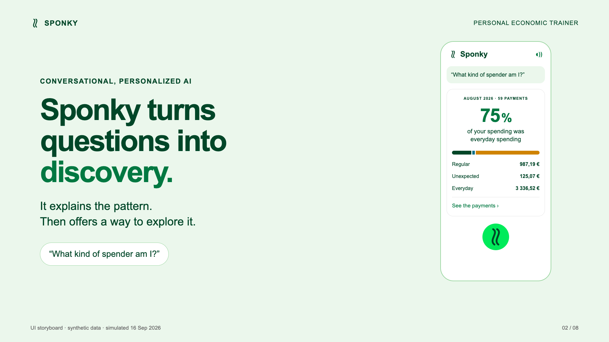
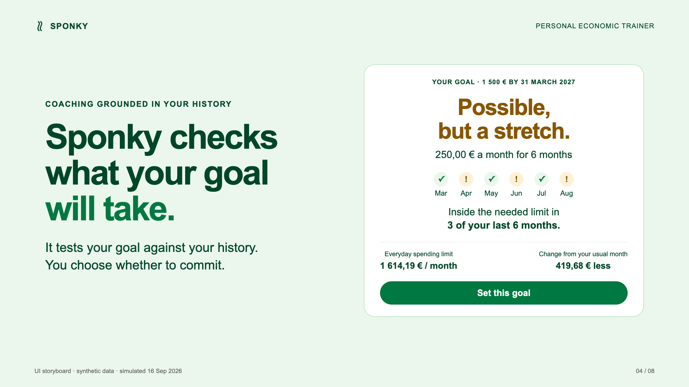

01 · Sponky starts the discovery

02 · Sponky guides the exploration

03 · Sponky makes the spending understandable

04 · Sponky checks what the goal takes

05 · Sponky turns the goal into next steps

06 · Sponky guides and celebrates the check-up

07 · Sponky guides. The user decides.

08 · The promise to remember